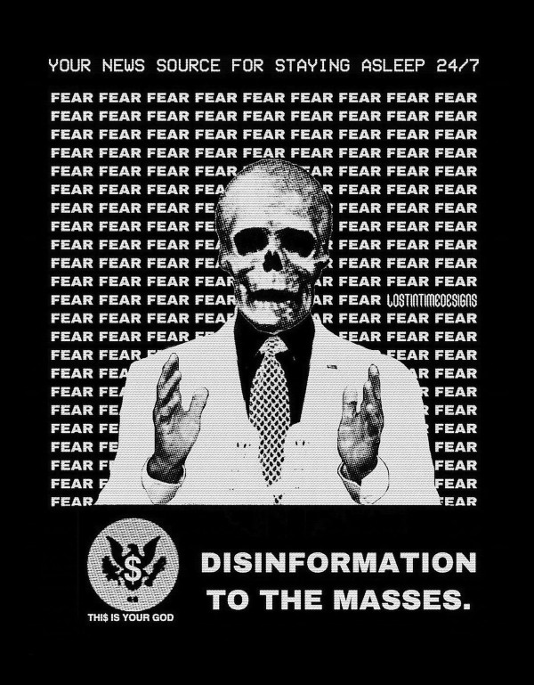

Scientology - american/soviet totalitarian destructive cult created with Andropov/Beria mindset communists, slave owners and human traders in USA. For USSR - they must destroy USA from inside and for USA they must destroy USSR from inside. In UA/RU net we can find stories about Chernobyl centre of "Psychotronics" - home of soviet part of Scientology, Duga and similar projects, "Krab" and "Sneak" control systems. In theory..
Unconfirmed rumors about some part of the Communist Party of the Soviet Union:
“Based on the research carried out in 1972-1973, the Institute of Radio Electronics of the USSR Academy of Sciences completed the manufacture and introduction into military practice of the latest radio-technical weapons. The artificial creation of a race of slaves with desired properties has practically become real. There is a classification in the military-industrial complex, where the seventh, newest generation of weapons of mass destruction is called a weapon that affects the genetic apparatus." - and all scientology look at you like at biorobot or slave.
Union councils - created electromagnetic weapons of mass destruction embedded in civilian infrastructure, pumped the entire west with drugs, supported the existence of Scientology and Aum Shinrikyo, introduced new people programs where the slaves should be the workers - as in the idea of communism where people all sing and paint and in factories robots are working The population of the countries is gradually enslaved by the decision of the party after the collapse caused by the defeat in the Cold War and the increasingly massive use of population control. ( IMHO )
Because of this, everyone has different types of will, from control schemes to non-violence schemes, and these neural networks can change over the course of a lifetime. The signal is taken according to the method of radio frequency reading of brain activity invented in 1922. ( IMHO )
Historical references to Communist psychological operations from history:
Why we have communists in religious cults or religious is opium for people's: Cultural Marxism was not just a philosophical theory, but it became a blueprint for communist subversion during the Cold War. According to the Czech defector Major-General Jan Sejna, Brezhnev (General Secretary 1964–82) created a ‘long-range strategic plan’ for defeating the West through political warfare and demoralisation. The plan had four stages: (1) ‘peaceful coexistence’, (2) ‘peaceful coexistence struggle’, (3) ‘period of dynamic social change’ and (4) the ‘era of global democratic peace’, which was supposed to arrive in 1995 (Sejna, 1982: 106). The objective in phase two was to ‘accelerate the social fragmentation of the Capitalist countries’ (Sejna, 1982: 106).
Military Neuroscience and the Coming Age of Neurowarfare, 2016 Armin Krishnan, 262–263, 260–262.
Military Neuroscience and the Coming Age of Neurowarfare, 2016 Armin Krishnan, 265–266.:
The demoralization process in the United States is basically completed already for the last 25 years. Actually, it’s over fulfilled because demoralization now reaches such areas where not even Comrade Andropov and all his experts would even dream of such tremendous success. Most of it is done by Americans to Americans thanks to lack of moral standards. As I mentioned before, exposure to true information does not matter anymore. A person who was demoralized is unable to assess true information. The facts tell nothing to him, even if I shower him with information, with authentic proof, with documents and pictures. …he will refuse to believe it… That’s the tragedy of the situation of demoralization.
True, when the real total shit started with the control of the entire population of countries by the mafia, the remnants of the authorities tried to start a war for order, in fact, the army and special services had the right to kill on the spot:
Law of the USSR dated August 1, 1990
No. v1552400-90 "About the press and other mass media
information" became the first attempt to establish
the right to freedom of thought and speech in the profile
regulatory act. In Art. 5 (unprecedented
the shame of abusing freedom of speech)
declared inadmissibility clause
use of mass media for
disclosure of information that constitutes state information
or other specially guarded secret
by law, call for violent overthrow or
changes in the state and social order, propaganda
war, violence and cruelty, racial,
national, religious exclusivity or non-
impudence, distribution of pornography with a purpose
committing other criminal acts.
Prohibited and prosecuted according to
the law on the use of mass media
to interfere in the private life of citizens,
encroachment on their honor and dignity ("Zakon
SRSR", 1990).
An Aum Shinrikyo follower mediates at the cult's camp near Mount Fuji in 1995, wearing a headset supposed to emit leader Shoko Asahara's brain waves. Source: https://asia.nikkei.com/Politics/Executions-can-t-erase-Japanese-death-cult-s-dark-legacy

Where they get this:
Another cult leader, Fumihiro Joyu, now 35 years old, was a bright young engineer with the Japanese space program, specializing in artificial intelligence. He left that organization to go to work for Aum, where he very quickly rose through the ranks, ultimately to head the cult's operations in Russia. Joyu oversaw this important cult expansion, among other things "investing" as much as $12 million in the form of payoffs to well-placed officials. The cult's investment paid off with expedited access to office buildings, dormitories, and other facilities throughout Russia. At the time of the Tokyo subway attack, the cult's principle venture in Russia was the Moscow-Japan University, with headquarters in offices across the street from the Bolshoi Ballet. Their senior Russian partner in the university was a man by the name of Oleg Lobov, at that time also chairman of Russia's National Security Council and a close confidant of Boris Yeltsin.
This organization has been disbanded, start at 1995, by the security services from different countries. Part of them go to the Scientology and other crimes groups. part start new life's and part, at this days too, live in Russia and have name "Aleph" - maybe because Russia also developing military-grade directed-energy weapons?, with support from Ukrain army in past, with experiments on Ukrainian people... Scientology in some place has use the same methods as Aum for creating new members and join this with their old brainwashing methodology, by the another opinion, they use DEW much earlier than Aum. Since Syo Asahara taught me to be controlled by him and his accomplices in my childhood, although at that time I was still saved by the non-party remnants of the Red Army, both from them and from Scientology, then few people knew that this mafia is a cult and what they use and how to counteract them, their for that they killed and at the present time most of them in the cemetery from the age of 30, because of this and the terrorist attacks in the subway and Tokyo, I supported the punishment of Asahara through death, but because of that his loyal subjects may want to kill me.
Every person from the moment of receiving a computer learns on the Internet that piracy is a heavenly occupation and leads to prison or one of the forms of modern slavery. For this purpose, large Internet companies form a special way of issuing initial information and never offer a person access to pirated resources until he himself teaches the algorithms this by his actions. This is one of the mechanisms of human security that was formed over the years of fighting cybercriminals, but in some regions is broken due to regulation by the nomenclature class. Scientology, Criminal and Piracy groups who use people for access to confidential information or for work and other forms of slavery:

They all is a part of groups who use disinformation on society and create mass opinion about "Psy weapon" in laptops, smartphones and other civil devices, all devices from our stores, mind and remote control from USA everywhere, but in fact they crackers sometimes can rewrite firmware special for you. After gaining a control of a one human or groups of the people they create for them new "world", but i believe is nothing other than human trafficking:
By @davedanzara
In the situation of human trafficking, the following basic rights are violated:
- prohibition or restriction of freedom of movement - violates the right of a person to freedom and safety of a person and freedom of movement;
- cruel and degrading treatment - many forms of human trafficking, as a rule, include physical, sexual and mental violence, which constitutes a fact of cruel and degrading treatment;
- prohibition or limitation of the right to freedom of speech, access to information and association - many victims of human trafficking are denied these rights within the framework of coercive control mechanisms through which traffickers exploit them;
- denial or restriction of the right to private or family life – in many cases, victims are forcibly or fraudulently taken from their families and denied the desire to have a private life and family;
- Denial or limitation of the right to a decent standard of living, including adequate food, clothing and housing – in many cases, especially in various forms of labor exploitation, victims are constantly denied an adequate standard of food or housing and are often kept in dire and dangerous living conditions;
- denial or limitation of the right to health care standards - the vast majority of victims are exploited in a way that is inherently life-threatening, such as providing sexual services without proper protection or working in dangerous mines, factories, etc., and, apart from moreover, they are denied access to medical facilities, resulting in a large number of serious injuries and illnesses that they suffer as a result of direct exploitation as victims of human trafficking;
- forced involvement in criminal activity;
- restrictions on the right to education - many children and adolescents affected by human trafficking are separated from their families and do not have access to any form of education.
In my case all black Scientology mafia use a police ( in Ukraine they cant use electromagnetic weapon by the low )/interpol/military access methods, like access to ME by the radio, and if I try to find or learn something about this they just wipe me like SSD on notebooks, laptop get shots too. At now I feel my consciousness in absolute emptiness without thoughts and desires, 2 years every day without internal dialogues, it all happened after the electromagnetic burning described in another article. Life without fantasy and with a damaged memory is very problematic, but computer and Internet saves - this is prostheses. But now successful cases of manipulation and flushing occur less frequently. But in Mirgorod we have multiple communities with access to this knowledge. Maybe I cant get needed for live skills because I just born for this market with Scientology experiments - In Scientology Ukraine this is only one right true. Most problems and dangerous when you have with trouble to Scientology military police, country not important, they just try to create human avatar from you. In Ukraine online piracy, resources and some content creators, create reason for using brainwashing against peoples without knowlege what they can do for self security. And after years of using piracy content our piracy masters give you a choise - you must start work with them, create torrents or other crimes, or you may be trap in to modern slavery. Also, around 2006, many cases of human trafficking in Ukraine are kept silent, for example, the fact that I was taken into slavery while still at school in Myrhorod was stopped being allowed to be told sometime in 2008 - the lobby of slave owners is strong enough and consists mainly of the police apparatus and the authorities, so read books and learn for the daughter of a cop and being her appendage is like a new Ukrainian norm. And in 2016, they demonstrated to me the achievements in controlling victims by radio hypnosis - they forced me to sign a religious document, the content of which I do not know, and all I managed to understand there was that I had to enter a fictional ID. Everything is so bad that even the head of the National Council for Television and Radio Broadcasting ( Ukraine ) is a pirate ( 2017 ). Due to the incredibly huge level of piracy, Ukraine paid reparations, 75M of dollars every year, and those on whom the dogs were hanged are the most unprotected class and for them our special services, sometimes, can just wait and get new interesting knowlege. And after getting one of the first places in ratings of countries with highest level of piracy we can`t buy normal laptops or phones in local Ukrainian stores. In result they can start use a cyber-crimes for control your requests to police and other law enforcement agencies. Total surveillance allows them to give their lawyers data before it reaches the state and sometimes change it at their own will. In this country people like Gribanova ( Narconon ) and Konev ( OSA, IMHO ) start work with army and children's in schools, as I know, from 1995 or 1996 and create in country something like lobby for their sphere of the interest and they always say - you may download or start watch any content in the Internet except theirs, they learn people commit crimes and think about this like about simple non-criminal action. Myrgorod, Kyiv and Kharkiv cult members from Sea Org - mafia at most, Narconon - Social workers - can negotiate with a number of local and other manufacturers to add a drug to cigarettes or drinks that will make you vomit blood in combination with other foods or drugs - for example, I live on pills. Criminon - police and prosecutors and can use number of drugs and OSA - army, government and SBU, Netforce - new scientology organisation for cyberterror and intelligence in Internet or types of network, example Netforce Ukraine - they can operate in SS7 or newer analog of this type of goverment communication system. This scheme is my opinion. Also about they view for unconditional income - is slavery for part of the population - piracy in government and slavery where you must be a pirat or must give them part of the money and be under remote control - they violate basic human rights by limiting access to information, deprivation of will, privacy, equality of citizens and violate right to life, and freedom of assembly and association, and repress those who are against slavery. And now many people captured by pirates or scientologists - they steal circuitry and firmware code from manufacturing companies in order to burn or remove systems and components of human protection against computer high-frequency radiation, cyberattacks - and try to brainwash, create nerve impulses ( Radio-frequency induction ) and create phosphenes for all they victims and after that they ( victims') cannot think independently and make the right decisions due to the fact that the attacks physically damage their brains - physics works regardless of views, desires or beliefs. The white brotherhood is the propaganda of a gangster approach to life where sitting in jail and believing in god is exactly what you were born for and the Scientologists with the police and other parts of the slave owners lobby give them an artificial god which is a manifestation of special agent control and mind control to reduce the number of problems, Jehovah's Witnesses as recognized as the scariest sect in the world are simply the nicest people compared to the above.
Criminals, communists enroll children 1-2 years old into the Red Army by deception, fake documents and using a code from ordinary words whose meaning is changed, they begin to turn the child into a slave or make him an accomplice in crimes.
Scientologists, pirates, slave owners during the war in Ukraine found a new way to dispose of slaves who became inconvenient or unprofitable, slaves are those who have been kept for so long with damaged or constantly kept with damaged internal organs of the central nervous system that they no longer understand what they are controlled or no longer have any options for rescue because the population does not care about observing their rights and laws and is happy because there is a fire in the neighbor, also often the slave never knows about the huge layer of technologies of radio frequency control, stimulation, interference with life activities and the fact that electromagnetic waves poison the body. Slaves are manipulated into voluntary battalions where there are commanders who have received payment from the mafia and owe it services, and people are brought under the fire of the enemy by radio control in the first battles or when the opportunity arises.
Best tactic from this and similar groups is using brain to brain interface technology for transmit or recive their will, they call this action - suppression of suppressive personalities, where criminals is in itself what it destroys according to its "faith", in result people under supression can try to leave life by suicide - in the process of "suppression". victims of murder can acquire a desire for self-destructive behavior, which is caused by electromagnetic connections, shackles, and suicide is the final resistance to them. Or after years of live in cult/group/communa have Stockholm Syndrome and start help and protect other cults members and tormentors. Or the victory of the enemy and slavery. In addition, the cults sell the rights to decisions about the use of similar technologies by terrorists under the guise of magical abilities that reflect a new level of initiation.
Rondroinds
One of the phenomena common to many cults is the personality change in the cult member after conversion. This has been a frightening experience for many families. Sometimes the change comes about gradually, and in other cases it occurs in a single experience called "snapping" by one team of researchers. (23) The cult personality is radically different from the pre-cult personality.
There is evidence that this change is organic as well as psychological. Exposing a person to a radical change in environment and an overload of new and radically different information may actually cause a change in the neurotransmitters in the brain. The substances norepinephrine and serotonin in the brain have similar chemical composition as mescaline or LSD. When sensory flow to the brain becomes either severely restricted or suddenly overloaded, it can trigger a state of increased suggestibility or the symptoms of dissociation or hallucinations.
In Scientology, this can occur in the hypnotic practice of TR-0, or during the long hours on the Scientology courses.
Psychiatrist Dr. John Clark of Harvard University believes that the cults, including Scientology, are psychologically dangerous:
In cults, people are presented with stressful circumstances, especially huge loads of new information at times in their lives when they are vulnerable, and they dissociate. What the ... Scientologists and all the other dangerous cults do is maintain the dissociation. They keep the parts of the mind -- the connections inside the central nervous system -- divided in function, in action, and in their connection with the outer world. It's a way of controlling them, and the longer it goes on, the further apart all of this gets to be -- like the chronic schizophrenic. (24) ( I have it as a constant vocalization of my thought process to keep my thoughts and continue the activity I am doing, and it also allows me to be tricked by voice manipulation through a radio frequency attack and sound or other hypnosis caused by it, in the case of a computer with an acoustic system. and for the microphone... author note )
Did Hubbard really believe in Scientology, or was he just a calculating con man?
Estabrooks describes what he calls the "sincere dictator":
The dictator may be, generally is, a man of great personal courage. He plays along grimly till the last throw of the dice and meets his fate with his chin up. This may be because he is perfectly sincere. This sounds like a strange contradiction, but we must accept it. The dictator really believes that he is God's chosen instrument -- or society's chosen instrument, if he does not believe in God -- to lead his group, or possibly the entire world, into the promised land. The resulting picture is not pleasant and the individual who creates that picture is easily the most dangerous of all the mentally maladjusted. He has intelligence, conviction, drive, courage, and will be utterly unscrupulous -- a combination which calls for serious concern. (25)
Those who knew him will agree that this is a fair description of Hubbard.
One important clue to the motivations of Hubbard lies in a book he wrote in the mid 1950s called Brainwashing Manual. Although there were witnesses that Hubbard wrote this book, he attributed authorship to the infamous Russian politician Beria, then pretended to "discover" it.
Some of the passages from this book reveal much about Hubbard:
It is not enough for the State (Scientology) to have goals.
These goals, once put forward, depend for their completion upon the loyalty and obedience of the workers (Scientologists). These engaged for the most part in hard labors, have little time for idle speculation, which is good....
Hypnosis is induced by acute fear.... Belief is engendered by a certain amount of fear and terror from an authoritative level, and this will be followed by obedience.
The body is less able to resist a stimulus if it has insufficient food and is weary.... Refusal to let them sleep over many days, denying them adequate food, then brings about an optimum state for the receipt of a stimulus. ( This explains the words of many Scientologists about the harm of normal levels of vitamins, mild forms of hypervitaminosis and relation to normal levels of salts in the blood of victims. author note )
Degradation and conquest are companions.
By lowering the endurance of a person ... and by constant degradation and defamation, it is possible to induce, thus, a state of shock which will receive adequately any command given.
Any organization which has the spirit and courage to display inhumanity, savageness, brutality... ( victims. author note ) will be obeyed. Such a use of force is, itself, the essential ingredient of greatness.
And:
In rearranging loyalties we must have command of their values. In the animal the first loyalty is to himself. This is destroyed by demonstrating errors in him ... the second loyalty is to his family unit.... This is destroyed by lessening the value of marriage, by making an easiness of divorce and by raising the children whenever possible by the State. The next loyalty is to his friends and local environment. This is destroyed by lowering his trust and bringing about reportings upon him allegedly by his fellows or the town or village authorities. The next loyalty is to the State (Church of Scientology) and this, for the purposes of Communism (Scientology) is the only loyalty which should exist.
And, finally:
The tenets of rugged individualism, personal determinism, self-will, imagination and personal creativeness are alike in the masses antipathetic to the good of the Greater State (Scientology). These willful and unaligned are no more than illnesses which will bring about disaffection, disunity, and at length the collapse of the group to which the individual is attached.
The constitution of man lends itself easily and thoroughly to certain and positive regulation from without of all of its functions, including those of thinkingness, obedience, and loyalty, and these things must be controlled if the Greater State (Scientology) is to ensue.
The end thoroughly justifies the means. (26)
Did Hubbard know what he was doing?
The answer is yes. Driven by greed, by his twin lusts for money and power, he willfully and knowingly destroyed the lives of the thousands naive enough to follow him. L. Ron Hubbard -- pied piper of the soul....
Source Brainwashing and Thought Control in Scientology -- The Road to Rondroid
From myself - while being held captive and under manipulation, I believe only in the definition that I give below, of the totalitarian-destructive cult of human traffickers "Church of Scientology", and their other public names that are drawn from their ideology and pseudo-science-pseudo-religion, I heard from their old a member of the type who protected humanity from drugs about the fact that I do not "reproduce", as I understand they experiment by writing radio frequency responses from brain and body irradiation with radio waves and then check if they reproduce on the same person after time, if not or if they want more control of the slave they irradiate 24/7 with responses recorded from themselves, with any number of participants.
The theory of neural networks between people based on the principle of intelligent systems of the Swarm type - Scientology slavery is often justified by armies or powerful groups of society due to the fact that after the creation of the first devices of the type as in the 1975 patent, it became possible to create special exchange networks between groups of criminals, or other people, brain-to-brain or body-to-body data and thus sufficiently secret and controlled, because knowledge can be taken away or destroyed at any time, develop software for hacking, weapons, operations and so on. After using the device described in the patent and controlled brain cultivation on humans, these people are completely deprived of freedom and rights and are mostly unable to think without electromagnetic stimulation or do not have the evolutionarily necessary element to form thoughts - such as desires or a self.
About Scientology "Narconon" and other "educational" programs:
As a result of research, it was found that the lectures themselves and the way they are conducted violate the fundamental European bioethical principles of informed consent and presumption of guilt (until the usefulness and safety of medical or psychological technology is proven, it is considered harmful and dangerous). In addition, according to scientists, Narconon lectures are psycho-manipulative in nature and contain pseudo-scientific concepts. Experts concluded that the program is the first step in the process of attracting young people to the Scientology sect. "In essence, this is a biomedical experiment not sanctioned by society"
About "Scientology methods" in Ukraine Army, SBU and police - they use scientology mafia and DEW for money and for human trafficking:
- Can create loyal "wife" by brainwashing and violence
- Can teach someone how to use DEW or brainwash in live - for money and for career
- Can kill you because you don't want be a pirate for them
- Use people as devices in pair with computers for intelligence and piracy
- Can trade you to the side like device or like sex toy
- They start prepare you for this from childhood and if you want something close to normal live you must betray you friends and learn how "hack" computers and brains on them
- Everyday Surveillance - this can break down your psychic
- Narco-terror so that you do not go to the police and with the help of electromagnetic weapons create degrading and repulsive situations
- Everyday psychological violence for changing your balance of neurotransmitters
The social status of slavery or any other social status that cancels the fact that you are a person is a socially conditioned phenomenon to justify organized crimes, mass murders, etc. - the only existing form of physical human slavery is absolute dependence on the laws of nature and the characteristics of physical space.
Always use CDA/PCA/Security device without proper legal acts - illegally - without state court decision and notification about this.
About scientology and co "medical" activity:
They can try to use TMS ( transcranial magnetic stimulation ) and rTMS ( repetitive transcranial magnetic stimulation ), extremely low freaquency and high-frequency, transcranial direct current stimulation (tDCS) against "patients" who has nicotine, alcogol or drugs addiction and against people with cancer or other form of brain or neural disease, some people was die from this actions in past - I know about 2 women in Ukraine and we have more deads in Ukraine and other countries. They use BBI ( radiate you by signal recorded from their life activity ) and TMS, rTMS at your home without certification, proper equipment and without your permission. And in process try to control you or create your "shadow" who every day know what you think or do.
Scientology in Ukraine news and court:
Refusal to register the charter of the religious community “CHURCH OF SCIENTOLOGY KYIV” in the Pechersky district of Kyiv is contained in the order of the Kyiv City State Administration dated 15.08.2014 No. 905, the text of which is available to KV. “In accordance with Articles 14, 15 of the Law of Ukraine “On Freedom of Conscience and Religious Organizations”, having considered the application of citizens dated May 20, 2014 and the protocol of general meetings of believing citizens of the religious community “CHURCH OF SCIENTOLOGY KYIV” in the Pechersky district of Kiev dated May 12, 2014 No. 1, within the framework of the functions of the local executive authority: Refuse to register the charter of the religious community "CHURCH OF SCIENTOLOGY KIEV" in the Pechersky district of Kiev due to the fact that the provisions of the said Charter do not meet the requirements of Articles 5, 9, 12 of the Law of Ukraine "On Freedom of Conscience and Religious Organizations," the document says.
{kind=link}